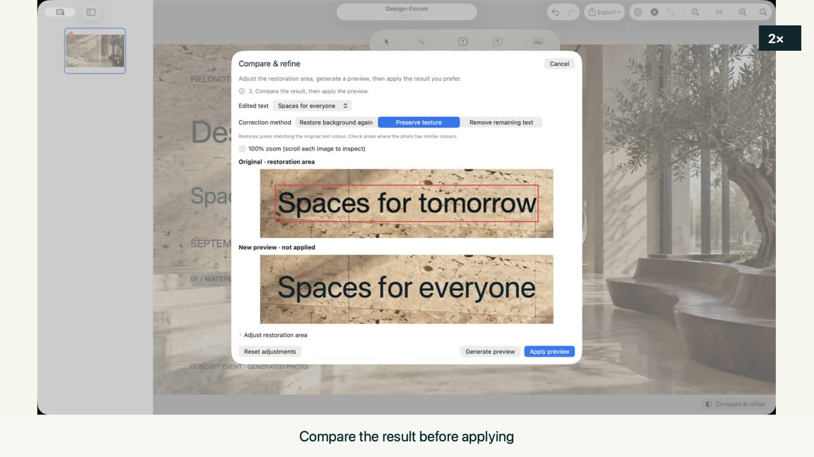
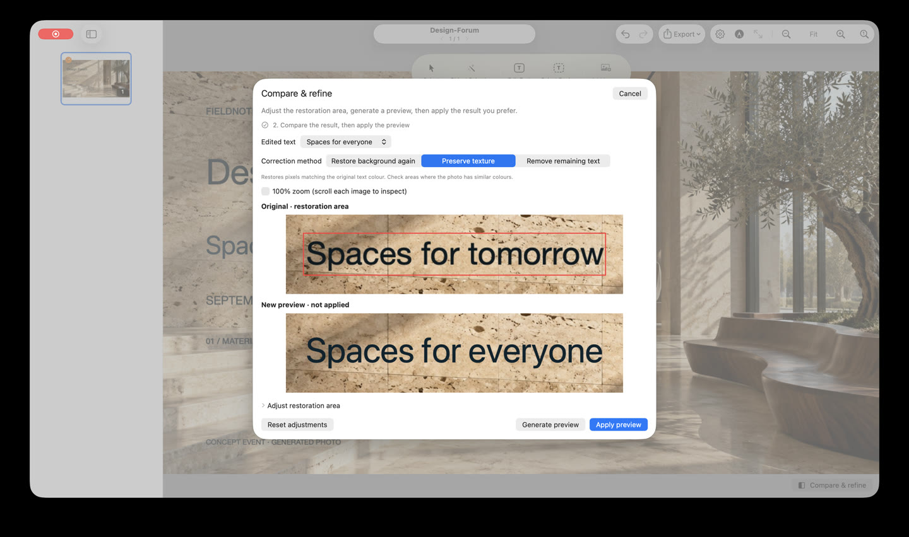

01
Select the text you need
Open a PDF or image, choose Edit Text, then double-click a detected OCR region. Choose recognition languages in Settings. Small text, decorative fonts and low-resolution images may need manual adjustment.
{kind=link}

Fix a date, replace a heading, or update a slide without rebuilding the presentation. Document processing stays on your Mac. Editing and export are free.
Open a PDF or image, choose Edit Text, then double-click a detected OCR region. Choose recognition languages in Settings. Small text, decorative fonts and low-resolution images may need manual adjustment.

In 1.2, Compare & Refine offers larger previews, adjustable restoration bounds and texture-preserving corrections. Generate a preview, compare the result and explicitly apply the correction. Hidden details cannot be recovered exactly.

Choose fonts, size, color and alignment. Style selected text and add rectangles, ellipses, arrows or curves. Version 1.2 also lets you adjust letter spacing; the original font is not automatically recovered.

Select an object with on-device segmentation, then move or remove it. Inspect the filled source area, especially on detailed photos and repeated patterns.

Edits are separate layers. Toggle or remove layers and use undo/redo while working. Export creates a new file. Version 1.2 improves OCR undo/redo and warns before closing a document with unexported edits.

Save an edited PDF, PNG/JPEG images, MP4 slideshow or animated GIF. In 1.2, use File > Export PDF or Command-Shift-E. Finish the current text edit before exporting.

Compare the input with the actual edited output on a textured photo background.


Generated sample image processed by the actual on-device engine. These are slide outputs, not app screenshots. Background quality varies; inspect the result before exporting.
{kind=link}